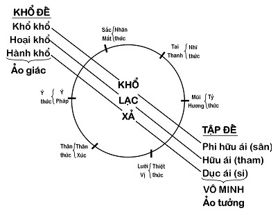

|
Thực Tại Hiện Tiền Viên Minh |
|
BuddhaSasana Home Page |
Vietnamese, with Unicode Times font |
|
|
Thực Tại Hiện Tiền Viên Minh |
|
[03] ĐI V ÀO KINH BÁT NHÃT rước khi đi vào kinh Bát Nhã, chúng ta sẽ thảo luận về những điểm liên quan. Ví dụ: thế giới là gì?Người ta thường tưởng rằng, bên ngoài là thế giới, bên trong là tôi. Tôi và thế giới bên ngoài là hai thực tại khác biệt nhau. Không phải vậy, thế giới là gồm tất cả cái đang hiện hữu bên trong chúng ta với toàn thể cái hiện diện bên ngoài. Chữ Loka trong Pāli là thế gian, nó mang toàn bộ nghĩa này: bên trong cũng Loka mà bên ngoài cũng Loka. Nội tại và ngoại tại chỉ là một. Nếu có ai chưa rõ thì tôi xin được hỏi, cái gì ở bên ngoài? Bên ngoài có phải bên ngoài toàn bộ cái tôi đây không? Không phải, mình tạm nói, thế giới toàn bộ cái tôi và bên ngoài. Nhưng trên thực tế chẳng có gì là bên trong, chẳng có gì là bên ngoài cả. Tôi xin ví dụ: khi tôi nói cái tay rồi tôi đưa tay lên thì cái tay bỗng trở thành đối tượng của mắt, vậy nó là sắc, là thuộc lục trần. Mà lục trần thì nó đã trở thành bên ngoài mất rồi, phải không? Bây giờ mình ví dụ cái tâm chứ gì. Tôi đang sân, tôi thấy cái sân. Vậy cái sân đã trở thành đối tượng của ý. Sân là pháp, đối tượng của ý cũng thuộc lục trần. Vậy thì sân bên trong đã chạy ra bên ngoài rồi. Vậy tâm cũng không phải bên trong. Thật ra chẳng có gì là trong, chẳng có gì là ngoài cả. Xin quý vị nhớ cho điều đó. Tôi nói vậy không phải là lý luận. Đây là sự thật. Sở dĩ tôi nói thế là phá bỏ cái biết quy định về sự phân biệt trong ngoài. Thế giới là gì? Thế giới là toàn bộ lục căn, lục trần và lục thức, tức là 18 giới:
Giới là lãnh vực riêng biệt. Bây giờ chúng ta sẽ xem nó vận động như thế nào mà phát sanh lắm chuyện như vậy. Pháp là một sự vận động liên tục, miên tục, luôn luôn mới lạ nên chúng ta phải chuẩn bị sẵn sàng với một cái nhìn tinh tường mới thấy nó được. Không phải chỉ đơn giản như ta viết lên bảng: "khi mắt thấy sắc thì một cái biết của mắt phát sanh, đó là nhãn thức". Không máy móc như vậy. Con mắt nó cứ chớp chớp liên tục, có cái thấy nào của nó mà giống nhau đâu, phải không? Không phải pháp, khi mà nó đã "nhậm trì tự tánh" rồi, là nó cứ đứng yên một chỗ đâu. Nó luôn luôn uyển chuyển, biến đổi và sinh động. Thế đấy! Trong kinh Bát Nhã có đoạn: vô nhãn, nhĩ, tỷ, thiệt, thân, ý; vô sắc, thanh, hương, vị, xúc, pháp, nãi chí vô ý thức giới chính là 18 giới, là cái chỗ mà chúng ta đang xét sự vận động của nó đây. Trong các bộ kinh chính thống của cả Nguyên Thủy, Tiểu Thừa và Đại Thừa đều chỉ nói sáu thức. Mãi đến 900 năm sau Đức Phật Niết Bàn, luận sư Thế Thân mới đề cập đến Mạt-Na Thức và A-Lại-Da Thức trong môn Duy Thức Luận của Ngài. Ở đây tôi xin nói thêm một tí rằng, sở dĩ truyền thống Abhidhamma Nguyên Thủy không nói đến 2 thức này, vì không xem đó là những tâm riêng mà chỉ là những giai đoạn đóng vai trò tác dụng trong tiến trình của một tâm mà thôi. Khi một tâm sinh khởi, luôn luôn sinh khởi theo một tiến trình. Trong tiến trình của tâm đó lại có nhiều yếu tố duyên khởi mang một tác dụng khác nhau. Mạt-na không phải là một tâm (thức) mà nó là một phần của Javana trong tiến trình tâm [*]. Còn A-lại-da cũng không phải là một tâm (thức) mà chỉ là vai trò Tadālambana và Bhavanga ở cuối tiến trình tâm mà thôi. Điều này tôi sẽ xin trình bày kỹ trong những buổi hội thảo sau. Ở đây tôi chỉ xin lưu ý một điểm là khi xem Mạt-na như một tâm, người ta dễ lầm nó như một thành phần có sẵn, trong khi Javana có thể khởi, có thể không khởi tùy duyên, tùy mỗi người. A-lại-da cũng vậy, khi xem đó là một tâm, mà lại căn bản tâm nữa người ta dễ lầm với một bản thể luận thường kiến, và mặc dù luận sư đã cố tránh, người sau vẫn chấp lấy nó như là bản tâm, một ý niệm khác về Đại Ngã hay, linh hồn này bất biến. Đó là điều chúng ta cần phải lưu ý để khỏi rơi vào ngoại đạo tà kiến. [*] Javana là Tốc hành tâm (tâm Đổng Lực), Tādalambana là Đồng sở duyên (tâm Mót hay tâm Thập Di), Bhavanga là Hữu Phần (hay tâm Hộ Kiếp ). Trong kinh Lăng Nghiêm, khi có người hỏi làm thế nào để thoát ra khỏi những điều trói buộc. Đức Phật bảo lấy cái khăn, gút 6 gút, rồi dạy Ngài A-Nan: "Làm sao người ta có thể gỡ ra được 6 cái gút này?" Ngài A Nan đáp: "Bạch Đức Thế Tôn, mình gút như thế nào thì mình tuần tự gỡ ra như vậy thôi!". Sáu cái gút ấy chính là nhãn, nhĩ, tỷ, thiệt, thân, ý cột với sắc, thanh, hương, vị, xúc, pháp bằng sự trung gian của nhãn thức... ý thức. Nói là 18 nhưng thật ra chỉ có 6. Sáu cái này khi mà cột lại thì nó tùm lum hết trơn, phải không? Cho nên người ta nói là:
Nếu mà lục căn mà bị vọng động, bị loạn lên một cái thì liền lập tức thế giới thân-tâm-cảnh bị mây vô minh, ái dục che phủ hết trơn. Còn nếu mặt trời tuệ mà sáng suốt chiếu soi thì: "Chơn giác vô công, căn trần hà tội?". Cái mà mình gọi là giác ngộ thì nó chẳng có công lao gì hết và cái căn trần (lục căn, lục trần) nó chẳng có tội lệ gì. Mắt tiếp xúc với sắc có tội gì đâu? Mắt tiếp xúc với sắc sở dĩ gọi rằng tội là vì do mình vọng khởi tùm lum mà thôi. Bây giờ chúng ta cùng nhau xem xét sự vận động của thế giới ấy. Mình tạm coi thế giới ấy có bên trong và bên ngoài. Con người mình đây là bên trong và xung quanh là bên ngoài, tạm gọi là thế giới thân-tâm-cảnh đi cho dễ nói. SỰ VẬN ĐỘNG CỦA 18 GIỚIKhi mắt tiếp xúc với sắc, xúc ấy chỉ thành hình khi có sự cộng tác của nhãn thức: Mắt + sắc + nhãn thức → Xúc Vậy khi nói mắt tiếp xúc với sắc xin quý vị hiểu cho là nói toàn bộ sự vận hành tập khởi trên. Sự vận động ấy cuối cùng ghi lại một hình ảnh về sắc, hình ảnh đó gọi là pháp. Cũng vậy, hình ảnh ghi lại về thanh, hương, vị, xúc (vật thể sờ được bằng cảm giác của thân, khác với chữ xúc vừa nói trên) đều gọi là pháp. Chữ pháp dùng đây chỉ giới hạn trong nghĩa "tiền trần lạc tạ ảnh tử", tức là hình ảnh rơi rớt lại của sắc, thanh, hương, vị, xúc. (Có một điều đáng lẽ chưa nói ở đây, nhưng tôi cũng xin mở ngoặc một chút để quý vị có một khái niệm thôi, rằng thực ra pháp không phải chỉ là "tiền trần lạc tạ ảnh tử" như Duy Thức liệt vào sắc pháp). Đối tượng của ý cũng không phải chỉ l à pháp. Theo Abhidhamma Nguyên Thủy, đối tượng của ý gồm có:
Sự trình bày này rất vi tế, nếu có một dịp khác chúng ta sẽ nói rõ hơn, bây giờ xin quý vị đừng quan tâm. Đến đây, vấn đề bắt đầu quan trọng, bắt đầu sự vận động của toàn diện con người mình đây. Khi mắt thấy sắc và ta thu nhận hình ảnh của sắc đó, thì việc gì xảy ra? Rồi kế tiếp đó là gì? Có người hỏi: - Có phải cảm thọ không? - À, đúng. Đó chính là cảm thọ. Cảm thọ này có 3 loại là: khổ, lạc và xả. Khi mắt tiếp xúc sắc, xúc ấy tạo cho ta một cảm giác khó chịu, ấy là khổ thọ. Nếu xúc ấy làm cho ta dễ chịu thì lạc thọ. Nếu cảm giác là bình thường không khó chịu, không dễ chịu, tức không khổ, không lạc, ta gọi là xả thọ. Có phải đúng vậy không? Đấy là sự thật, sự kiện đang diễn ra chứ không phải là do lý luận mà có, không phải do ai đó lập ra bằng quan niệm của lý trí, mà sự thật ấy diễn ra trong mọi chúng ta, và ai cũng có thể cảm nhận được, thấy được. Tôi xin lập lại:
Có ai phản đối sự vận hành đó không? Có ai phản đối sự kiện đó không? Có người hỏi: - Đồng ý là sự thật ấy ai cũng có thể thấy ngay nơi chính mình, nhưng xin thưa, cũng là thấy sắc nhưng có người khi thấy sắc ấy lại khổ, có người khi thấy sắc ấy lại lạc. Cũng là sự thật, nhưng sự thật làm người này vui, mà người kia lại khổ. Vậy đâu là sự thật? cái nào là thực? - Câu hỏi đó hay lắm. Đó chính là điều mà tôi đang định nói tới. Toàn bộ sự vận hành này của 6 căn, 6 trần và 6 thức đến khổ thọ, lạc thọ hoặc xả thọ phát sanh hoàn toàn tự nhiên thụ động. Hoàn toàn thụ động nên gọi là vô nhân. Vô nhân là vì nó không tạo tác, không gây ra nhân. Nó chỉ là kết quả thụ động.
Thí dụ: khi bật đèn 100 watt lên, thì người ta đau mắt thấy khó chịu (khổ), người mắt bình thường thấy dễ chịu (lạc). Vậy độ sáng của ngọn đèn là sự kiện khách quan (trần cảnh), còn con mắt (căn) và cái thấy (thức) thì chủ quan nên dĩ nhiên mỗi người nhìn một khác. Yếu tố đau mắt hay không đau mắt là kết quả của cái thân do nhân quá khứ. Nhân quá khứ có thể tội hay phước nhưng hiện tại chỉ là quả không có tội gì cả. Người khó chịu hay người dễ chịu không có sai gì cả, cả hai đều thọ nhận đúng nhân quả của họ. - Trở lại vấn đề, khi mắt thấy sắc thì bao nhiêu thức khởi lên, có ai biết không? - Dạ, hình như có thân thức. - Anh nói đúng, nhưng không phải hình như mà là có thân thức hợp tác vào thật sự. Thế anh có nghĩ là có ý thức nữa không? - Dạ, hình như có. Khi con nghe một bản nhạc hay hay con thấy màu xanh, đó có phải ý thức chen vào không? - Anh lại nói hình như, tức là anh chưa quan sát kỹ. Đúng là có ý thức cộng tác vào nữa. Trường hợp anh thấy màu xanh đó là một tiến trình riêng của ý thức rồi. Nó là tưởng tượng hay liên tưởng rồi. Vậy thì khi mắt thấy sắc, không phải chỉ có nhãn thức khởi lên mà còn có cả thân thức và ý thức cùng khởi nữa.
Cũng vậy,
Chúng ta phải quan sát cho kỹ mới thấy rõ sự vận hành của nó. Khi mắt thấy sắc thì chỉ có xả thọ thôi. "Cái thấy" chỉ có thọ xả, còn thân thức mới có khổ hay lạc. Xin lưu ý điều đó. Cái thấy, cái nghe, cái ngửi, cái nếm hoàn toàn không thọ khổ, lạc chỉ thọ xả. Còn thân xúc mới thọ khổ hay lạc:
Như vậy, khi mắt thấy sắc, do đèn chói thì thấy khó chịu, cái thấy của mắt không khó chịu mà xúc giác của con mắt khó chịu. Xúc giác của con mắt thuộc về thân. Khi nghe âm thanh khó chịu, thì cái nghe không khó chịu mà xúc giác của lỗ tai thuộc về thân khó chịu. Cũng vậy là mũi và lưỡi. Tôi nói thêm điều này một chút. Khi ta ăn vô một miếng ớt mà cay. Nhưng mà cảm nhận khó chịu là chức năng của thân thức nơi lưỡi. Chúng ta phải chiêm nghiệm rõ để thấy pháp vận hành bằng không sẽ rất lầm lẫn. Ví dụ có người nghĩ rằng: "chà, tôi ăn cái ni nó cay ri, có lẽ là do cái tâm của tôi, vậy tôi phải bỏ cái tâm cay này đi!". Cay là cái chuyện của thiệt thức và cảm giác khó chịu là chuyện của thân thức chứ tâm đâu có cay mà bỏ tâm cay? Cay chỉ mới là vị giác và của xúc giác. Và mặc dù có ý thức nhưng vẫn còn tự nhiên thụ động (vô nhân) chứ chưa phải là tạo tác của tâm. Vậy đâu có tâm gì cần phải bỏ, trừ phi biết cay sinh tâm bực tức. Vậy cần phải thấy sự vận hành đó cho đúng đắn, kẻo lầm. Còn trong ý thì có khổ, lạc không? Ở nơi ý, xin quý vị phải lưu tâm. Cái khổ của ý gọi là ưu, cái lạc của ý gọi là hỷ. Nhưng điều này chúng ta sẽ nói sau. Trở lại sự vận hành. Khi mắt thấy sắc, đèn chói, khó chịu, mắt đau - khổ thọ. Khổ thọ không ở nơi nhãn thức, nơi cái biết của mắt, mà chính là thân thức nơi con mắt khổ. Khi khổ thọ chỉ có thân thức là khổ chứ không có ai khổ cả. Nhưng thường chúng ta hay đồng hóa nó với cái tôi, như là cái khổ toàn diện, khi nói "tôi khổ" thì khổ là thực còn "tôi" chỉ là ảo tưởng mà thôi. KHỔ → PHI HỮU ÁI → KHỔ KHỔ Bây giờ chúng ta đi sâu hơn một chút nữa. Khi cảm giác khổ phát sanh, chúng ta thường có phản ứng như thế nào? Khi khổ phát sanh, thường bản ngã có ý chống lại cái khổ, nghĩa là muốn lẫn tránh hay loại trừ cái khổ. Theo danh từ nhà Phật, thì ước muốn loại trừ ấy gọi là phi hữu ái: muốn hủy diệt cái khổ hay không muốn khổ tồn tại, cho nên phi hữu ái thuộc về đoạn kiến. Khổ phát sanh → ước muốn loại trừ = phi hữu ái. Chúng ta thử xem xét, phân tích lại thử coi, cách tu hành của chúng ta có đúng không? Chúng ta đang khổ, muốn tu hành cho hết khổ. Coi chừng rơi vào phi hữu ái! Phải không? Tôi đang ở trong cõi trần gian đau khổ, cho nên tôi muốn tu mau để lên cõi Thiên Đàng, Cực Lạc, ở đó sẽ không còn khổ nữa. Vậy là rơi vào phi hữu ái, có đúng không? Và khi mà rơi vào phi hữu ái thì sao? Phi hữu ái xen vào cái khổ, thì cái khổ sẽ chồng lên cái khổ, nên gọi là khổ khổ, đúng không? Tôi sẽ ví dụ: trời đang nóng, thấy nóng khó chịu quá, tôi bực bội, tôi quay quắt, rồi than: "Trời ơi! Sao trời nóng nực khổ thế này!". Như vậy là sao? Như vậy là mũi tên khổ mới bắn dính ở nơi thân, đã ghim vào tâm rồi. Vậy là khổ chồng chất lên khổ. Tôi đang đợi một người nào đó mà chưa thấy đến. Tôi nóng nảy, bồn chồn: "Sao chưa tới kìa! Sao chưa tới kìa!". Vậy có phải là cái khổ tâm lý gia tăng và chồng chất lên không? Vậy khi có khổ, nếu ta muốn khẩn trương loại trừ nó, thì cảm giác khổ tâm lý càng gia tăng lên, nghĩa là đem phi hữu ái mà chồng lên khổ thì thành ra khổ khổ. Khổ thọ (sinh lý) + phi hữu ái = khổ khổ (tâm lý). - Nhưng bây giờ quý vị nghĩ cho kỹ xem, cái khổ đó có thực không? - Dạ, thưa Thầy, không có thực. - À, đúng như vậy. Cái khổ đó không có thực. Nhưng xin thưa: không thực nhưng mà thực, bởi nó di hại lên chính cái thân này, khi mình bực bội, tức giận, dẫu là ảo nhưng mà tim mình lại đập loạn lên, thần kinh căng thẳng. Như vậy thì có khổ thật, nhưng khổ thật này lại do cái khổ ảo giác tạo ra. Ví dụ: tôi đang đứng như thế này, đang ngắm nhìn về phía trước, bất thình lình có người đánh sau vai. Nhìn lại, thì thấy cái anh chàng hôm qua mới đánh lộn với mình, tôi còn thù nó vì nó mới đánh tôi gãy mấy cái răng còn đau. Quý vị nghĩ sao về cái đập sau vai đó? Cái đập đó thật là rất đau, rất khổ, rất tức, rất bực, rất hận. Có đúng không? Nhưng nếu nhìn lại thấy một người bạn rất thân mà lâu ngày chưa gặp lại, thì cái đánh đó lại cảm nghe rất nhẹ nhàng, êm ái mà cũng rất là thân thương. Vậy thì cảm giác đó, cái cảm giác mà nếu mình tính được trọng lượng, giả sử 500 gram cho cú đánh đó, thì với người thù của mình, mình rất khổ, nó không phải là 500gr mà lại 1.000gr. Nhưng với người thân thương thì chẳng những cú đánh không đau đớn gì, đã không khổ mà nó biến ra vui, ra lạc nữa! Vậy trong đó, con số 500gr đo được là thực, còn 500gr thêm vào là ảo giác. Hoặc cảm giác khổ đó giảm xuống số không, rồi lại biến hóa qua lạc thì cũng toàn là ảo giác do tâm lý tạo ra cả. Tuy vậy ảo giác đó lại xem ra rất thực đối với chúng ta, đến nỗi nó sẽ in dấu thành cảm thọ thực trên thân! Cho nên nếu mình thực sự nhìn thẳng vào cái khổ đó, thì cần gì tu cho thoát khổ? Có đúng không? Tại sao phải tu cho thoát khổ làm chi! Ta cứ việc nhìn rõ, nhìn thẳng vào cái khổ thì ta liền thấy cái khổ đó chỉ là ảo giác, không có thực. Tại ta không chịu nhìn thẳng, không biết nhìn thẳng cho rõ ràng. Đấy l à chuyện khổ, còn chuyện ý muốn diệt khổ? Ý muốn diệt khổ có đúng sự thật không? Xin thưa, ý muốn đó cũng là một ảo tưởng, một vọng niệm. Ví dụ: câu chuyện đợi người hồi nãy. Mình đợi hoài sinh ra nóng nảy, bực bội. Nhưng người kia có thể có trường hợp khách quan xảy ra là xe bị nổ lốp, bị kẹt đường... nên đến trễ mất 5 phút. Thật ra nếu đợi 5 phút mà tâm mình bình thản thì có sao đâu. Nhưng ở đây do tâm đợi chờ bực bội nên 5 phút đã biến thành 50 phút, phải không?Có người thấy thành phố ồn ào, bụi bặm, mệt mỏi chán nản quá, muốn đóng cửa một ngày. Một ngày nằm nghĩ yên tịnh trong phòng, quý vị thấy khỏe ru, an lạc vô cùng. Nhưng nếu quý vị bị công an bắt bỏ bót một ngày thì quý vị sẽ thấy sôi sùng sục, tù túng không chịu nổi. Tại sao vậy? Cũng một ngày chớ mấy? Cũng như nhau sao một bên thì khỏe khoắn lạ lùng và một bên như lửa đốt gan ruột? Đó là thực hay giả? Vậy thì phi hữu ái là một ảo tưởng, vọng niệm. Còn cái cảm giác do ảo tưởng này chồng chất lên trên cái khổ đó là thực hay giả? Nó cũng giả. Nó là ảo giác. Vậy chuyện tức cười của chúng ta là khởi lên một ảo tưởng để rơi vào một ảo giác, rồi lại khởi lên ảo tưởng toan trốn chạy ảo giác đó! Người đời, những kẻ túy sinh mộng tử, đã đành như thế. Nhưng tiếc thay nhiều người tu hành cũng chẳng hơn chi, phải không? Họ tu để trốn chạy cái khổ trong một số ảo tưởng của họ. Tu như vậy sai 100%, có đúng không? Cảm giác + ảo tưởng = ảo giác. LẠC → HỮU ÁI → HOẠI KHỔ Chúng ta vừa nói đến khổ. Bây giờ chúng ta đề cập đến lạc. Khi có cảm giác lạc thì ta thường muốn giữ cái lạc đó lại. Giữ cái lạc đó lại là rơi vào hữu ái, lòng ham muốn cái lạc đó tồn tại mãi. Cho nên hữu ái thuộc về thường kiến. Ví dụ: khi quý vị hành thiền, đắc được hỷ lạc, thấy người thoải mái, thích thú. Và rồi ngày nào cũng muốn lặp lại trạng thái đó. Vậy là hữu ái. Có đúng không? Không đúng xin quý vị cứ cãi, đừng chấp nhận một cách bừa bãi hoặc chấp nhận mà không suy xét, thẩm tra. Cứ việc nói thẳng ra giùm cho. Khi quý vị có một cảm giác lạc phát sanh, quý vị liền khởi lên ý muốn giữ cho cái lạc đó tồn tại. Giống như có cái đẹp, muốn giữ cái đẹp đó lại. Chuyện gì xảy ra? Tôi xin có thí dụ: có một cô gái đẹp, thi được giải hoa hậu. Thế nên ngày nào cô cũng soi kiếng. Hôm nọ thấy một vết mụn trên mặt, cô thấy khổ sở vô cùng hoặc thấy sút một cân hoặc tăng lên một cân là cô đau khổ không chịu nổi. Trái lại, một cô gái khác buôn gánh bán bưng ở chợ, mọc một lần 2, 3 cái mụn mà cô ta chẳng thấy khổ sở chi hết. Lại nữa, vì lo cho mẹ và các em nên cô ta quần quật lam lũ nắng mưa, không nề hà gian khổ nên có sút mấy cân cô ta cũng chẳng thấy khổ chi cả, trái lại còn thấy niềm vui trong lòng vì đã lo cho mẹ và em. Tại sao vậy? Tại vì cô ta có giữ cái gì cho mình đâu. Còn cô hoa hậu vì cố giữ cái đẹp nên khổ. Do đó, cố giữ cái lạc cho tồn tại là khổ. Nhưng ngay khi cái lạc đang tồn tại mà nơm nớp lo sợ nó mất đi cũng khổ. Có anh chàng nọ cưới một cô gái cực đẹp, đẹp tuyệt trần. Quý vị biết sao không? Anh ta khổ sở quá chừng. Anh ta khổ hơn người lấy vợ nhan sắc bình thường, chỉ vì anh ta sợ ngày sợ đêm, hễ cô vợ đi đâu vắng mặt một chút là anh ta như lửa đốt. Cô vợ nói chuyện với ai là anh ta ghen ngược, ghen xuôi, v.v... Như vậy, cái lạc đang có cũng khổ vì sợ lạc bị mất. Người tu thiền định hôm kia đắc được hỷ lạc, hôm nay cứ ngồi để mong lặp lại và kéo dài thời gian hỷ lạc ấy, vì thích thú quá mà, tức là rơi vào hữu ái, là cái khổ mong cho lạc tồn tại. Người tu ấy chắc chắn là thua xa người đang khổ mà an nhẫn, trầm tĩnh và thấy rõ cái khổ ấy một cách trọn vẹn có phải không? Một người chạy trốn cái khổ vào sâu trong rừng để cố gắng thiền định, đắc được hỷ lạc, rồi cố giữ hỷ lạc ấy thì còn thua xa cô gái buôn thúng bán bưng an nhiên kham nhẫn để nuôi mẹ giúp em. Tu như vậy thì có chạy 10 kiếp cũng không kịp người kia, chẳng phải thế sao? Pháp vốn tự nhiên, đến đi tự tại, người giác ngộ được pháp tánh đó và sống trọn vẹn với pháp tánh đó gọi là Như Lai, là Thiện Thệ. Ngược lại: Muốn kéo dài lạc → khổ - Thế còn nếu lạc tồn tại quá lâu thì sao? Xin hỏi quý vị? - Thưa, chán ngắt! Chán ngắt! - À mọi người trả lời đúng. Tồn tại quá lâu thì sinh ra chán ngắt, không chịu nổi, và nó trở nên cái khổ, cho nên: Lạc kéo dài quá lâu → khổ Thế mà có biết bao người tu hành chỉ mong muốn được thường tồn, cực lạc, đại ngã, mỹ tịnh chi chi đó cũng chỉ là hữu ái mà thôi. Ví như có người ở thôn quê mãi ăn cơm độn khoai, độn sắn, hôm nọ lên thành phố người ta đãi cho anh ta một tô phở. Ngon quá, anh ta khen "Ôi! Tô phở thật là thiên đàng". Nghe khen, người ta đãi cho anh ta 1 tô nữa, 1 tô nữa, 1 tô nữa... cho đến 10 ngày như vậy. Đến lúc đó, anh ta đâm sợ hãi, đòi về cho bằng được. Vì sao vậy? Vì tô phở "thiên đàng" đã biến thành tô phở "địa ngục". Vậy khi hữu ái chồng lên cái lạc, nó sẽ biến lạc thọ thành hoại khổ: Lạc thọ (sinh lý) + hữu ái = hoại khổ (tâm lý). XẢ → DỤC ÁI → HÀNH KHỔ: Chúng ta đã nói đến khổ và lạc, nay chúng ta thử xem xét về cảm giác xả. Không cảm thọ lạc cũng không cảm thọ khổ, một cảm giác bình thường, không khổ không lạc mà quý vị đã biết là xả thọ. Cái xả thọ đó có khổ không? - Thưa không. - Anh trả lời đúng. Nhưng, trên thực tế, ít ai chịu được cảm giác xả quá bình thường, quá trầm lặng, quá yếu ớt đó. Xả không phải là khổ nhưng người ta thường xem nó là khổ, và thích đi tìm cảm giác mạnh. Ví dụ: đang đi tới đi lui với cảm giác bình lặng như thế này một hồi, rồi bỗng khởi lên ý nghĩ: "Chà! Chán quá, bây giờ mà mình đi coi xi-nê thì thú biết mấy!". Phải không? Nghĩa là mình không thích yên (xả), ưa khởi tâm đi tìm cái thú, cái vui, cái lạc, chén rượu, cuộc cờ, tán gẫu với một người bạn, v.v... để mà giết thì giờ, để mà lấp cho đầy cái trống trải, để mà chạy trốn cái cảm giác bình thường, phải không? Do đó, lúc ta ở trong trạng thái bình thường, thì chẳng bao lâu, ta liền cho cái bình thường kia là khổ. Đúng thế không? Ta không chịu nổi trạng thái bình thường vì nó dễ trở nên nhàm chán, buồn nản. Ta có khuynh hướng đồng hóa xả với khổ, để rồi chạy đi tìm cái lạc. Có anh chàng nọ đi qua chùa Huyền Không, hồi đó chùa còn ở đèo Hải Vân, Lăng Cô, thấy cảnh chùa sao mà "thiền" quá, các vị sư ở đây sao mà thanh thoát quá, hiền hòa quá! Bèn về nhà xin phép cha mẹ cho đi tu. Đến xin tôi, tôi đồng ý. Nhưng anh ta tới ở đâu được 3, 4 ngày chi đó rồi anh ta than: "Trời ơi! Sao mà buồn quá, chán quá!" rồi anh ta xin về. Đúng thôi. Chính cái êm đềm đó, cái bình thường đó người ta thường không chịu nổi. Vì không chịu nổi cái trạng thái bình thường của xả thọ, tâm chúng ta cứ khởi lên hoài, cứ cố tìm bắt một cảm giác khác, một trạng thái khác, không chịu yên. Chúng ta vì không giữ được tâm trong trạng thái bình thường, nên mới khởi lên một cái tâm để tu để đắc, khởi lên một cái tâm để tìm cái lạc thú, niềm vui, mơ tưởng, ước vọng v.v... đây chính là cái lăng xăng tạo tác, chính là hành. Hành này bị điều động bởi dục ái. Dục ái gồm có 3 loại: trong đối tượng hiện tại, dục ái nắm bắt sắc, thanh, hương, vị, xúc. Trong đối tượng quá khứ, dục ái nắm bắt hình ảnh pháp trần, kỹ niệm bằng hồi tưởng. Trong đối tượng tương lai dục ái nắm bắt hình ảnh ước mơ bằng tưởng tượng. Vậy cái khổ ở đây vi tế hơn, cái khổ chính sự lăng xăng tạo tác (hành) của dục ái nên gọi là hành khổ. Xả thọ (sinh lý) + dục ái = hành khổ (tâm lý). Để minh họa tôi xin kể một câu chuyện: có một anh ch àng khi không rủ bạn đi buôn. Anh bạn hỏi:- Đi buôn để làm gì? - Để có tiền. - Có tiền để làm gì? - Để sắm nhà, sắm xe, có vợ đẹp, con xinh, ăn ngon, mặc đẹp, nghĩa là để có hạnh phúc chứ gì nữa. - À, nếu vậy thì anh cứ đi đi, tôi không đi đâu, vì mặc dù tôi không có những thứ đó nhưng tôi đang hạnh phúc kia mà! Hạnh phúc, người ta thường đòi hỏi là phải cần có điều kiện gì gì đó, chứ ít ai hiểu rằng, đôi khi chẳng cần có gì cả mà vẫn hạnh phúc. Hạnh phúc là cái mà khi ta cần nắm bắt lại không được, nhưng khi ta không cần nó nữa thì nó lại đến ngay lập tức. Ông kia phải đi kiếm tìm, tạo tác lăng xăng là ông cần ăn ngon mặc đẹp. Còn ông này thì đâu có cần thế, vì ông ta ăn gạo lứt muối mè mà. Nhưng biết đâu chính người ăn gạo lứt muối mè lại đang hạnh phúc, còn ông kia, điều kiện là phải ăn ngon mới hạnh phúc, nên ông ta phải nổ lực, phải đổ mồi hôi sôi nước mắt để kiếm tiền. Phải không? Hạnh phúc mà có điều kiện thì còn khổ hơn cái khổ vô điều kiện, phải không? Cho nên không chịu nổi trạng thái bình thường (thọ xả) nên phải lăng xăng tạo tác. Cái khổ của lăng xăng tạo tác, chính là hành khổ vậy. Tóm lại: - Càng nôn nóng diệt khổ càng sinh thêm khổ khổ do phi hữu ái hay sân
đem lại. Nhưng tất cả những cái gọi là phi hữu ái (sân), hữu ái (tham), dục ái (si) bị điều động bởi một cái chung đó là vô minh. Hẳn quý vị đã thấy rõ tất cả khổ đó là do vô minh và ái dục cả, phải không? Kinh Lăng Nghiêm nói: "Tri kiến lập tri tức vô minh bổn", tức là lấy cái thấy, biết mà chồng chất lên cái thấy, biết hoặc nắm giữ, thiết lập cái thấy, biết đấy là gốc của vô minh. Đúng quá, phải không? Đang khổ, đúng ra khi đó chỉ việc thấy cái khổ thôi thì đâu có vấn đề gì, nhưng mình lại khởi lên cái tâm muốn diệt khổ. Đó chính là vô minh, là tri kiến lập tri rồi. Cũng vậy khi khởi lên dục ái, hữu ái, phi hữu ái là ta đã bị vô minh điều động. Coi chừng sự tu hành của chúng ta có bị rơi vào dục ái, hữu ái, phi hữu ái không? Chúng ta phải nhìn ra sự thật đó, nếu không luống công vô ích. Ví dụ: có người đang tinh tấn hết sức mình để tham một công án, mong rằng đạt được tự tánh vì nghe nói kiến tánh thành Phật! Nhưng kiến tánh thành Phật là một chuyện hoàn toàn khác, còn anh ta thì đem hết tâm tư để tham công án vì một vọng cầu. Vậy anh ta chỉ hoặc là bị chi phối bởi dục ái, hữu ái và phi hữu ái, hoặc cả 3 mà anh ta không thấy. Vì sao? vì anh ta đang chán thực tại, nên nôn nóng muốn đạt sở cầu "tự tánh", vậy là phi hữu ái rồi! Anh ta tham lam muốn sao đạt cho được tự tánh đó, tức là hữu ái và dục ái, vì bây giờ anh ta đang khởi tâm lên để nắm bắt, để sở hữu, để ngã hóa cái gọi là "tự tánh" ấy. Cũng vậy, chúng ta lên trên núi thật cao để thiền định, để luyện chú... chi chi đó. Để làm gì vậy? Để chỉ rơi vào quỹ đạo của dục ái, phi hữu ái hoặc hữu ái, hoặc cả 3. Vì vậy, chúng ta đạt được khổ khổ, hoại khổ và hành khổ mà thôi, chứ không thể nào đạt được giác ngộ, giải thoát. Mà dục ái, hữu ái và phi hữu ái là ảo tưởng nên đó là phi pháp. Khổ khổ, hoại khổ và hành khổ là ảo giác, nên nó cũng là phi pháp (thế gian pháp).
Các cảm giác khổ gọi là khổ thọ, và các loại ái đối với các loại thọ gọi là tập đế, tức là nguyên nhân của sự khổ. Còn 3 cái khổ ảo giác do chính ảo tưởng của các ái sinh ra gọi là khổ đế, tức là kết quả của vô minh, ái dục: Khổ Thọ ≠ Khổ Đế Quý vị nhớ cho thế này, đừng hiểu lầm, trong đạo Phật vẫn có thiền định, vẫn sử dụng thiền định. Nhưng khi nào mình thấy rõ thiền định ấy là pháp. Khi nào mà thấy tâm mình như vậy, sử dụng như vậy, khi ấy mới là thiền định. Còn ham muốn thiền định để đạt thiền lạc hay đạt pháp thuật thần thông gì đó, thì đều là sản phẩm của vô minh và ái dục vậy.  Bây giờ còn 15 phút để chúng ta hội thảo, ai có thắc mắc gì không? Buổi sau chúng ta sẽ đi tiếp đề tài này. Lưu ý là tất cả các buổi hội thảo, các đề tài nó nối kết với nhau thật chặt chẽ. Quý vị cố gắng theo dõi từ đầu đến cuối, nếu không có gì bất khả kháng. Vừa rồi, chúng ta nói đến sự vận hành của nội giới và thế giới bên ngoài, tức là 18 giới. Những buổi sau, chúng ta sẽ triển khai rộng ra sự vận động ấy. Có người hỏi: - Hồi nãy thầy nói phi hữu ái, hữu ái và dục ái là ảo tưởng và khổ khổ, hoại khổ, hành khổ là ảo giác. Ảo tưởng, ảo giác đều là phi pháp, không thực. Vì sao Đức Phật lại gọi là đế tức là chân lý, sự thật (sacca)? - Câu hỏi hay lắm! Như vậy là tại tôi nói không hết ý không rõ. Nhưng trước đây tôi có nói thấy vọng như thực tướng tức là chơn. Cái mà ảo tưởng, ảo giác tạo ra đều là phi pháp, là vọng, không có thực. Nhưng chính ảo tưởng, ảo giác lại có xảy ra, nên khi chúng ta thấy nó đúng thực tướng nó lại là thực, là chân, là pháp. Ví dụ: tôi nói "anh nói dối" thì có nghĩa điều anh nói ra là dối nhưng việc anh nói dối là một sự thật. Đúng không? Cũng vậy, đối tượng hay lý tưởng của các ái là ảo tưởng nhưng chính các ái lại là hiện tượng tâm lý có thật. Và ảo giác là ảo nhưng sự kiện tâm lý đó là cảm giác có xãy ra thực. Hơn nữa trong Tứ Diệu Đế mặc dù đều là Sacca nhưng có 2 loại khác nhau. Khổ đế và tập đế thuộc về tục đế, còn đạo đế và diệt đế thuộc về chân đế. Tục đế chỉ thực trong thế gian chứ không thực trong chân lý rốt ráo. Còn nói phi pháp là để phân biệt với chánh pháp chứ cả hai đều là pháp cả. Khi chúng ta sân mà chúng ta biết chúng ta đang sân thì tôi nghĩ rằng sẽ không có cái gọi là "chúng ta đang sân". Nếu giây phút ta đang sân đó, ta chú tâm, ta biết rõ cái tâm sân thì làm sao có sân được? Điều này, lần sau tôi sẽ nói rõ hơn. Nhưng ở đây tôi chỉ xin nói rằng: tu hành chính là thấy ngay cái pháp thực tại, cái Sanditthiko. Thấy ngay pháp thực tại chớ đừng bỏ lỡ bất cứ một pháp nào. Nếu quý vị bỏ lỡ một pháp nào thì quý vị sẽ học lại nhiều kiếp nữa. Quý vị đang sân, quý vị muốn dẹp cái sân đó bằng cách ngồi thiền được hỷ lạc thì còn nhiều kiếp nữa quý vị mới học ra được cái sân đó. Sân là một pháp, vậy mà mình không thấy ra được bản chất của nó thì không bao giờ giác ngộ được cả. Khoa học bây giờ nếu họ biết sấm sét là gì, giông bão là gì, động đất là gì, thì họ có thể sử dụng sấm xét, giông bảo và động đất vào những việc có ích cho con người. Tại sao năng lượng mặt trời người ta có thể sử dụng được? Nếu sợ ánh nắng mặt trời mà ta cứ trốn trong bóng mát thì đời nào người ta sử dụng được năng lượng mặt trời? Cho nên những cái gì đến và đi trong cuộc đời chúng ta, đều là bài học của pháp. Chúng ta phải học cho trọn vẹn, cái đó chính là giác ngộ đấy. Còn chúng ta nếu cứ trốn tránh hoặc chạy theo ý muốn riêng của mình thì muôn đời không bao giờ thấy được pháp, mà chỉ bị điều động bởi dục vọng của bản ngã mà thôi. Có đúng không quý vị? Không đúng thì cứ phản đối, xin cứ tự nhiên cho. Có người hỏi: - Thế tôi niệm A-Di-Đà để lên cảnh Tây Phương là sai à? Thế xưa nay người ta tu Tịnh Độ là sai hết trơn sao? Thầy phỉ báng người ta à? - Xin thưa là không, tôi không có phỉ báng. Điều đó chỉ đúng cho một số người. Nếu số người đó mà họ niệm A-Đi-Đà đến chỗ "nhất niệm" rồi thì họ sẽ thấy rằng lúc đó chỉ còn pháp để thấy mà thôi, không còn lên Tây Phương Cực Lạc làm gì nữa cả. Vì sao vậy? Vì "tùy kỳ tâm tịnh tức Phật độ tịnh", khi tâm mình tịnh rồi thì tâm mình chính là tịnh độ, chứ còn đòi lên tịnh độ làm gì nữa? Xin nhớ cho thế này, pháp của các vị Tổ, chứ không phải pháp của Phật, là vì lòng từ bi thương chúng sinh mà phải vận dụng ra. Cái đó có đúng không? Cái đó là nói dối đấy! Tôi nói thẳng là nói dối đấy! Vì cái đó không phải là pháp. Pháp là Sanditthiko, Akāliko... chứ đâu phải đợi đến chết rồi mới lên được cõi Tịnh Độ? Vậy làm sao mà "thiết thực hiện tiền" và "không có thời gian" cho được. Kinh Pháp Hoa, có nói: cái đó là vì cha thương con nên giả bộ nói xe trâu, xe hươu, xe nai tầm bậy tầm bạ rứa để cho những đứa con ham chơi nó ra khỏi nhà lửa thôi. Phải không? Còn khi mà chúng ra khỏi nhà lửa rồi thì chúng sẽ biết vì sao cha mẹ lại lừa dối mình. Chúng ta thường thường có cái tự ái gọi là "tự ái pháp môn". Chúng ta không chịu vượt lên một bậc, vượt lên trên cái "vận dụng" đó để mà tu thẳng vào sự thật. Điều đó chúng ta làm được. Đừng cứ mãi "tự ti" hoặc "tự tôn" ôm giữ mãi pháp môn của mình, không dám, không chịu tu thẳng để vượt lên, để thấy sự thật. Cái đạo, nếu mình chưa thấy thì mình phải tu theo pháp môn phương tiện cách này cách kia, nhưng khi thấy rồi thì mình chỉ có việc tu thẳng mà cũng đạt được kinh Di-Đà nói là cảnh Tây Phương Cực Lạc. Vì sao vậy? Vì "nhất cú Di-Đà vô biệt niệm, bất lao đàn chỉ đáo Tây Phương", khi niệm Phật đến chỗ không còn tạp niệm (vô biệt niệm) nữa thì cũng khỏi nhọc công (bất lao) đi lên Tây Phương (đáo Tây Phương) làm gì, Tây Phương Cực Lạc là vậy, là cái pháp thực tại vắng bóng tạp niệm . Ở đây chúng ta không xuyên tạc tông phái. Có những người vì trình độ không thể thấy pháp sự thật được thì khuyên họ cứ tiếp tục tu pháp môn phương tiện. - Còn 5 phút nữa. Có ai hỏi gì nữa không? Có người hỏi: - Con nghe Sư nói, nếu mình cứ để tâm bình thường, đừng khởi vô minh ái dục gì hết, như vậy có thể nói là mình được đạo. Nếu như mình khởi tâm lên để tu, để mong đạt được cái này, cái kia, tức nhiên sẽ rơi vào dục ái, hữu ái và phi hữu ái. Ở đây, có vấn đề giả dụ một người ngu, họ chẳng khởi tâm tu tập hay khởi tâm để đắc cái này cái kia chi cả, tâm họ cũng bình thường vậy thôi. Trường hợp ấy có khác gì với trường hợp của người trí? Sự khác nhau giữa hai việc không khởi tâm của kẻ trí và người ngu như thế nào? - Vâng, câu hỏi của anh rất hay. Đó là vấn đề quan trọng. Chúng ta nên đặt ra những câu hỏi như thế, chớ có thụ động. Tôi xin trả lời. Vấn đề của chúng ta không phải là khởi hay không khởi, mà là chúng ta bị chạy theo cái khởi đó, hay là chúng ta thực sự khởi nó? Khi một người thấy pháp mà khởi tâm dụng pháp thì hoàn toàn khác với người không thấy pháp mà khởi tâm! Hai cái đó khác nhau, hoàn toàn khác nhau. Còn nói rằng người ngu không khởi, thì cái đó không đúng. Không có người ngu nào mà không khởi tâm cả. Người ngu thì khởi tâm tầm bậy tầm bạ nữa là khác. Tuy nhiên, cũng có trường hợp không khởi trong trình trạng si mê, gọi là vô ký. Nó lại khác, nhưng lưu ý thế này, si mê cũng là một loại khởi tâm (môn tâm học Phật giáo Abhidhamma nói rất rõ các loại tâm này). Khi tâm không khởi, cũng là một loại tâm khởi! Nên nhớ như vậy. Khởi là cái gì? Tâm không phải như vật chất mà có lên có xuống? Tâm mình không khởi nó cũng vậy thôi. Khởi không phải chạy lên chạy xuống. Nằm yên cũng một loại khởi. Ví dụ: cố gắng giữ tâm thật định. Vậy là khởi tâm rồi gì nữa? Có đúng không? Xin quý vị nhớ cho điều quan trọng này. Chính khi tâm khởi mà mình biết rõ nó, thì khi ấy tâm lại không khởi. Còn nếu như khi tâm không khởi mà không biết, thì chính tâm đang ở trạng thái si mê. Cái đó thấy rất rõ chứ không phải lý luận đâu. Người nào có thấy tâm mình rõ ràng thì đều nhận ra điều đó. Ngài Huệ Năng nói: "Đối cảnh tâm sổ khởi". Đối cảnh tâm cứ khởi nhiều đi. Trong kinh Nguyên Thủy, Đức Phật cũng dạy vậy: "chớ bắt cái tâm không khởi, hãy khởi tâm thiện, tăng trưởng tâm thiện"... Vậy pháp có thể, tướng và dụng. Cái dụng tức là mình khởi lên để làm cái này cái kia đủ thứ. Nhưng vấn đề là mình phải biết nó, phải thấy pháp, nếu không, hoặc là chạy trốn, hoặc là chạy bắt cái này cái kia thì lại khác. Vấn đề là phải thấy pháp. Có người hỏi: - Hễ muốn là rơi vào dục ái, hữu ái, phi hữu ái, thậm chí muốn tu cũng vậy. Nếu có thế thì người ta cứ sống đừng muốn gì cả sao? Người ta đừng muốn tu sao? - Thưa, ông cụ hỏi rất đúng. Điều này cần phải được phân biệt rõ ràng. Cụ có nghe rõ không? À, rõ há. Vậy tôi xin trả lời: Thưa cụ, có 3 loại ý muốn. Loại ý muốn mà chúng ta vừa đề cập ở trên thuộc về ý muốn bị điều động bởi vô minh đó là dục ái, hữu ái, phi hữu ái. Ý muốn nào lọt vào quỹ đạo này đều là nguyên nhân của luân hồi sinh tử trong tam giới cả. Còn loại ý muốn thứ hai là ý muốn tự nhiên thụ động do điều kiện phát sinh một cách tất yếu, như đói muốn ăn, mệt muốn nghỉ, ngồi mỏi muốn đi, đi mỏi muốn đứng... Nếu loại ý muốn này được thực hiện đúng mức thì nó chính là "bản năng" của sự sống, rất cần thiết. Nhưng thiếu cảnh giác nó sẽ trở thành loại thú vật, và nếu đẩy nó đi quá xa, nó trở thành loại thứ nhất, lọt vào quỹ đạo vô minh ái dục. Loại thứ ba là ý muốn tích cực được hướng dẫn bởi trí tuệ, bởi người đã thấy pháp hay giác ngộ. Ý muốn này trở thành cái dụng của đạo. Nếu không có ý muốn này thì sẽ rơi vào "trầm không trệ tịch". Các bậc Thánh vẫn có ý muốn này nhưng dưới dạng duy tác (kiriyā). Riêng về ý muốn tu hành cũng có 2: hoặc thuộc loại thứ nhất, hoặc thuộc loại thứ hai. Ý muốn tu hành theo loại thứ nhất thì rơi vào vô minh, ái dục, còn theo loại thứ hai thì do thấy (chánh kiến) hoặc tin (chánh tín) mà tu hành thì không sai, do đó được gọi là tùy pháp hành và tùy tín hành. Tóm lại chỉ có ý muốn do vô minh ái dục điều động mới cần được chiếu phá, viễn ly và đoạn tận mà thôi. -ooOoo- |
||||||||||||||||||||||||||||||||||||||||||
Chân thành cám ơn anh Lê Trung Thành đã gửi tặng bản vi tính (Bình Anson, tháng 1-2004)
[Trở
về trang Thư Mục]
last updated:
08-01-2004